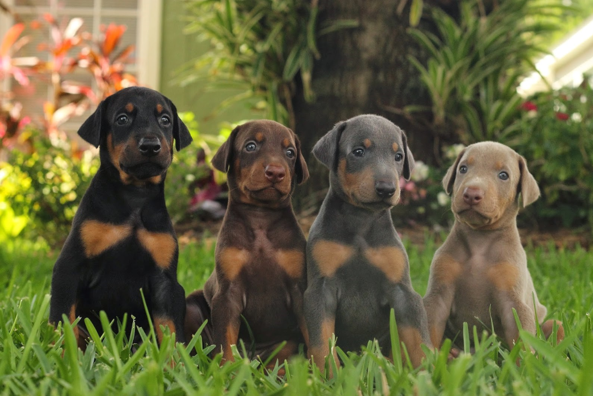
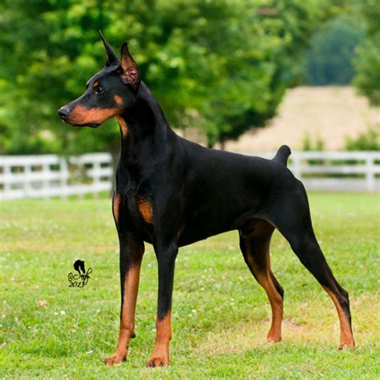

This website will be about Dobermen, since they are my favourite dog breed :D
The Doberman is a medium sized dog and were bred to be personal guard dogs. It is one of the smartest and fastest dog breeds.
There are four acceptable colours for the Doberman breed. Which are Black, Red, Blue and Fawn.
Dobermen usually have cropped ears and docked tails. But this is how they look like naturally.
